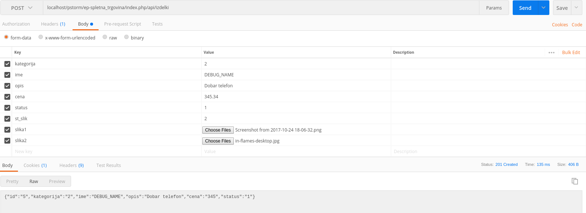
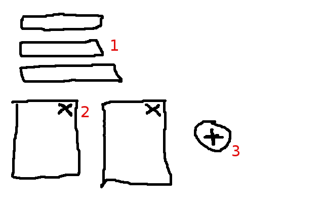

Izdelki
Vstavljanje
| Ime atributa |
Tip |
Komentar |
| kategorija |
integer |
polje je izbrano iz baze `kategorije` |
| ime |
string |
ime izdelka |
| opis |
text (textarea) |
opis izdelka - 1000 znakov |
| cena |
double |
cena izdelka |
| status |
integer |
polje je izbrano iz baze `status_izdelki` |
| st_slik |
integer |
skrito polje ki pove koliko slik je uporabnik dodal |
| slika1, slika2, slika3,... |
file |
vsaka nalozena slika je polje slikaX - lahko je od 0 do N slik |
Primer:

Urejanje

1. Navadna polja so brez nekih posebnih stvari:
- kategorija
- ime
- opis
- cena
- status
Slike se pa vse izrišejo, nato pa:
2. z AJAX klicem brišemo obstoječe slike
3. z AJAX klicem dodajamo nove slike